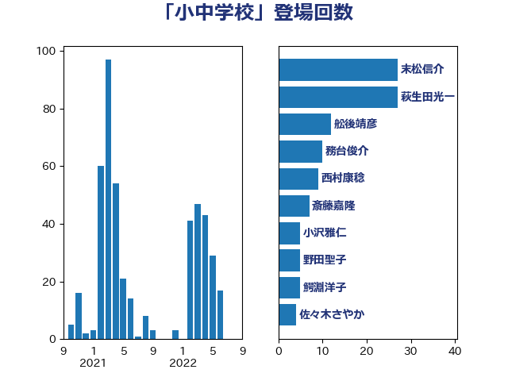

単語「小中学校」

| 末松信介 | 自由民主党 | 27 回 |
| 萩生田光一 | 自由民主党 | 27 回 |
| 舩後靖彦 | れいわ新選組 | 12 回 |
| 務台俊介 | 自由民主党 | 10 回 |
| 西村康稔 | 自由民主党 | 9 回 |
| 斎藤嘉隆 | 立憲民主党 | 7 回 |
| 小沢雅仁 | 立憲民主党 | 5 回 |
| 野田聖子 | 自由民主党 | 5 回 |
| 鰐淵洋子 | 公明党 | 5 回 |
| 佐々木さやか | 公明党 | 4 回 |
| 吉良よし子 | 日本共産党 | 4 回 |
| 岬麻紀 | 日本維新の会 | 4 回 |
| 西銘恒三郎 | 自由民主党 | 4 回 |
| 谷田川元 | 立憲民主党 | 4 回 |
| 鎌田さゆり | 立憲民主党 | 4 回 |
| 塩川鉄也 | 日本共産党 | 3 回 |
| 川田龍平 | 立憲民主党 | 3 回 |
| 梅村みずほ | 日本維新の会 | 3 回 |
| 浮島智子 | 公明党 | 3 回 |
| 深澤陽一 | 自由民主党 | 3 回 |
| 田野瀬太道 | 無所属 | 3 回 |
| 笠浩史 | 無所属 | 3 回 |
| 西岡秀子 | 国民民主党 | 3 回 |
| 高見康裕 | 自由民主党 | 3 回 |
| 下野六太 | 公明党 | 2 回 |
| 伊藤孝恵 | 国民民主党 | 2 回 |
| 伊藤岳 | 日本共産党 | 2 回 |
| 勝部賢志 | 立憲民主党 | 2 回 |
| 古屋範子 | 公明党 | 2 回 |
| 吉田とも代 | 日本維新の会 | 2 回 |
| 城井崇 | 立憲民主党 | 2 回 |
| 大西健介 | 立憲民主党 | 2 回 |
| 大西英男 | 自由民主党 | 2 回 |
| 宮口治子 | 立憲民主党 | 2 回 |
| 宮本徹 | 日本共産党 | 2 回 |
| 山崎正恭 | 公明党 | 2 回 |
| 山添拓 | 日本共産党 | 2 回 |
| 山田勝彦 | 立憲民主党 | 2 回 |
| 平木大作 | 公明党 | 2 回 |
| 新垣邦男 | 立憲民主党 | 2 回 |
| 柴田巧 | 日本維新の会 | 2 回 |
| 根本幸典 | 自由民主党 | 2 回 |
| 森山浩行 | 立憲民主党 | 2 回 |
| 湯原俊二 | 立憲民主党 | 2 回 |
| 片山大介 | 日本維新の会 | 2 回 |
| 石川博崇 | 公明党 | 2 回 |
| 稲富修二 | 立憲民主党 | 2 回 |
| 菅義偉 | 自由民主党 | 2 回 |
| 赤池誠章 | 自由民主党 | 2 回 |
| 道下大樹 | 立憲民主党 | 2 回 |
| 金子恭之 | 自由民主党 | 2 回 |
| 高木かおり | 日本維新の会 | 2 回 |
| 三木圭恵 | 日本維新の会 | 1 回 |
| 上川陽子 | 自由民主党 | 1 回 |
| 上杉謙太郎 | 自由民主党 | 1 回 |
| 上田清司 | 国民民主党 | 1 回 |
| 上野通子 | 自由民主党 | 1 回 |
| 下村博文 | 自由民主党 | 1 回 |
| 中川郁子 | 自由民主党 | 1 回 |
| 伊藤孝江 | 公明党 | 1 回 |
| 倉林明子 | 日本共産党 | 1 回 |
| 勝目康 | 自由民主党 | 1 回 |
| 古川禎久 | 自由民主党 | 1 回 |
| 堤かなめ | 立憲民主党 | 1 回 |
| 大串博志 | 立憲民主党 | 1 回 |
| 安江伸夫 | 公明党 | 1 回 |
| 宮本周司 | 自由民主党 | 1 回 |
| 宮本岳志 | 日本共産党 | 1 回 |
| 小宮山泰子 | 立憲民主党 | 1 回 |
| 小泉進次郎 | 自由民主党 | 1 回 |
| 尾身朝子 | 自由民主党 | 1 回 |
| 山口壯 | 自由民主党 | 1 回 |
| 山田賢司 | 自由民主党 | 1 回 |
| 岩渕友 | 日本共産党 | 1 回 |
| 岸真紀子 | 立憲民主党 | 1 回 |
| 平井卓也 | 自由民主党 | 1 回 |
| 平林晃 | 公明党 | 1 回 |
| 平沢勝栄 | 自由民主党 | 1 回 |
| 掘井健智 | 日本維新の会 | 1 回 |
| 斉藤鉄夫 | 公明党 | 1 回 |
| 新妻秀規 | 公明党 | 1 回 |
| 早坂敦 | 日本維新の会 | 1 回 |
| 榛葉賀津也 | 国民民主党 | 1 回 |
| 横沢高徳 | 立憲民主党 | 1 回 |
| 河野義博 | 公明党 | 1 回 |
| 浅川義治 | 日本維新の会 | 1 回 |
| 熊谷裕人 | 立憲民主党 | 1 回 |
| 牧義夫 | 立憲民主党 | 1 回 |
| 田島麻衣子 | 立憲民主党 | 1 回 |
| 田村憲久 | 自由民主党 | 1 回 |
| 石井啓一 | 公明党 | 1 回 |
| 磯崎仁彦 | 自由民主党 | 1 回 |
| 福山哲郎 | 立憲民主党 | 1 回 |
| 福島みずほ | 社会民主党 | 1 回 |
| 稲津久 | 公明党 | 1 回 |
| 竹内真二 | 公明党 | 1 回 |
| 篠原孝 | 立憲民主党 | 1 回 |
| 紙智子 | 日本共産党 | 1 回 |
| 舟山康江 | 国民民主党 | 1 回 |
| 芳賀道也 | 国民民主党 | 1 回 |
| 若宮健嗣 | 自由民主党 | 1 回 |
| 荒井優 | 立憲民主党 | 1 回 |
| 菊田真紀子 | 立憲民主党 | 1 回 |
| 蓮舫 | 立憲民主党 | 1 回 |
| 藤井比早之 | 自由民主党 | 1 回 |
| 藤田文武 | 日本維新の会 | 1 回 |
| 角田秀穂 | 公明党 | 1 回 |
| 赤羽一嘉 | 公明党 | 1 回 |
| 進藤金日子 | 自由民主党 | 1 回 |
| 野上浩太郎 | 自由民主党 | 1 回 |
| 金子恵美 | 立憲民主党 | 1 回 |
| 青山繁晴 | 自由民主党 | 1 回 |
| 青木愛 | 立憲民主党 | 1 回 |
| 高橋千鶴子 | 日本共産党 | 1 回 |